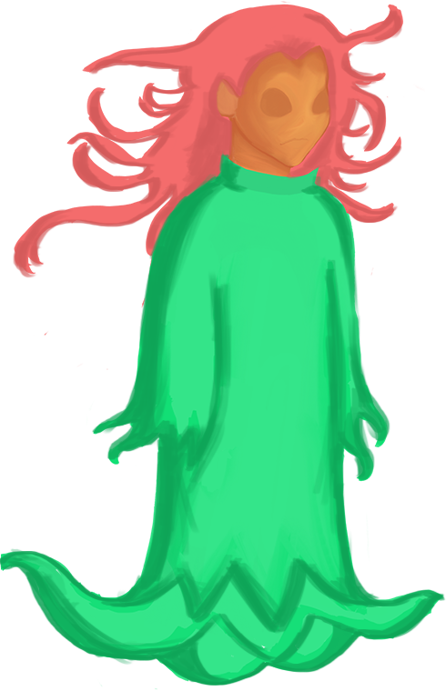
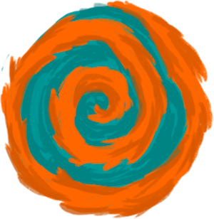

Instructions




The Sprite is tasked to travel across worlds to find all the missing waterlilies and return them to the kingdom.
"And would use the doorway to teleport into another world, only if all the waterlilies are found"